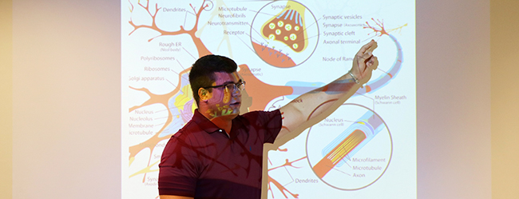
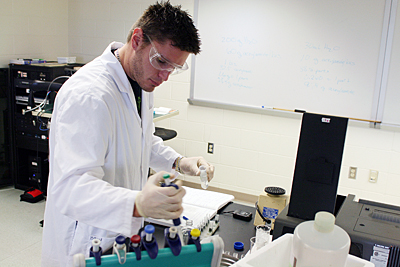
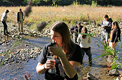
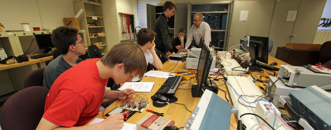

   
Bloomsburg University's Department of Chemistry and Biochemistry offers a Bachelor of Science and Bachelor of Arts in chemistry with options in biochemistry, chemistry education and nanotechnology.
The American Chemical Society (ACS) and the American Society of Biochemistry & Molecular Biology (ASBMB) recognize BU’s program as one that meets its standards for undergraduate education in chemistry and biochemistry. Many students graduate with certification from the AC and/or ASBMB.
Chemistry graduates have repeatedly demonstrated the quality of their preparation at BU by the high level of performance in graduate chemistry programs, professional programs such as medicine, secondary school teaching, and in the many chemically related industrial firms. BU's biochemistry option is an excellent choice for those interested in a career in medicine or veterinary school and as a stepping-stone into forensic chemistry.
Bloomsburg University's chemistry and biochemistry department offers Bachelor of Science (B.S.) and Bachelor of Arts (B.A.) program options.
BS in Chemistry — The BS in Chemistry is the program most commonly pursued by chemistry majors at Bloomsburg. It provides a broad exposure to all major areas of chemistry as well as options for experience in chemical research, some specialty fields and certifications.
BS in Chemistry - ACS — Completion of a research component will allow a student’s degree to be certified by the American Chemical Society. Students completing this program are particularly well prepared to pursue graduate studies or employment in industry.
BS in Chemistry - Nanotechnology Option — Students interested in the science of nanotechnology will spend one semester at Pennsylvania State University, taking 18 credits of nanotech courses. This offers students an opportunity to gain additional skills in an advancing technological field with a growing need for skilled workers.
BS in Chemistry - Biochemistry Option — Students interested in both biology and chemistry can pursue a specialized program in biochemistry. This is popular with students interested in attending medical and dental schools after graduation. Both standard and ACS certified tracks are available. Students have the opportunity to be awarded certification by the American Society of Biochemistry and Molecular Biology, ASBMB.
BA in Chemistry — The BA program provides a three year exposure to the core of the chemistry curriculum. Students can double major in chemistry and another discipline, or they can participate in the 3:2 program in engineering.
BS in Education - Chemistry Certification— Students interested in teaching high school chemistry pursue a program that awards them a BS in Education and the equivalent of a BA in Chemistry. The program features a capstone course entitled The Chemistry Curriculum and the Teaching Laboratory, the only course of its kind in the State System.
Physician Preparation Program — A combined Bachelor of Arts in Chemistry-Doctor of Osteopathy dual degree program that can be either three years at Bloomsburg University plus four years at Philadelphia College of Osteopathic Medicine (PCOM), or four years at Bloomsburg plus four years at PCOM.
Minor in Chemistry — A study of chemistry is a requirement of many of the sciences. Some science students extend their studies in chemistry by completing a minor.
|
Department Chairperson
Gregory Zimmerman | 570-389-5315 Department Secretary
Natalie Wilson | 570-389-5159 |
217 Hartline Science Center Office: 570-389-5159 Fax: 570-389-3028
|